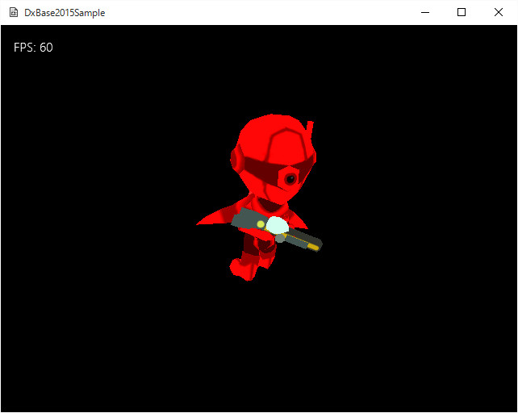

Simple07．独自フォーマットのスキンメッシュデータの読み込み
Fbx2Binツールで作成したスキンメッシュデータを読み込む
DxBase2015Simple/Simple07のソリューションを開いて、リビルド、実行しますと以下の画面が現れます。

図Simple07a
スキンメッシュの仕組み
スキンメッシュは
言葉は知ってるが、仕組みはちょっとという人も多いと思います。ですが、よく考えると、実にうまくできた仕組みであることがわかります。
簡単に説明しますと、人でも犬や猫でも、
骨格を持っています。それで、その骨格を覆い尽くすように、肉や皮膚がその周りを覆ってます。
スキンメッシュの
スキンは
皮膚という意味です。つまり、骨格を覆う皮膚のように弾力性を持って変化するアニメーション、という意味です。
これを、コンピュータ上で表現するには、まず、
骨格が必要になります。動物の例を考えればわかるように、骨格は腰骨から始まって、上に向かって背骨、下に向かって脚が伸びます。そしてその先には、関節をはさみながら、頭や腕、手、足などにつながります。
これをコンピュータでは
ボーン（骨）またはジョイント（関節）といいます、このドキュメントでは
ボーンと呼びます。
ボーンは
ルートボーンを起点として、３Ｄ空間のあらゆる方向に伸びています。これはら
行列であらわされます。すなわち、親ボーンに対する姿勢行列です。
このように親子関係をツリー構造的に表現します。そうすると親ボーンが動いたときに子ボーンもそれにつられて動き、さらに関節で親ボーンにつながりながら独自の姿勢をとることができます。
さて、ボーンが出来たら、それを覆う
スキン（皮膚）ということになります。
ボーンに合わせて頂点をそのまま動くようにすると、当たり前ですが、硬い感じになります。実際には皮膚は
伸び縮みするはずです。その
伸び縮みを表現するために
ウェイトという考え方を導入します。
ウェイトはその頂点が影響を受けるボーンのリストです。通常は、４つまでのボーンの影響を受けるように構成します。それで、そのウェイトの足した結果を1.0になるようにします。
つまり頂点の一つ一つが影響を受けるボーンのリストを持っていて、たとえば、すべて0.25のウエイトなら均等に影響を受けるようになります。しかし、関節に近い部分の頂点は、その近い関節の影響を一番受けます。
そのようにして、ボーンが動いたときに、各頂点がボーンに引っ張られるようにウエイトに合わせて動くようにすると、スムーズなスキンメッシュが出来上がります。
非常にざっくりした説明ですが、スキンメッシュを表現するのに必要なデータはどんなものが必要なのかがわかったと思います。
まず、ボーン情報です。そして、各頂点が、どのボーンに影響を受けて、どのようなウエイトになるかです。そして、アニメーション（瞬間瞬間のボーンごとの行列）です。しかし、
Fbx2Binツールでは、ボーン単位の変換行列はデータ化しますが、ボーンそのものはデータ化しません。つまり、親子関係をたどって、ルートボーンからの相対行列から、最終的な姿勢行列にしたものをデータ化しています。
そのため、アニメーションデータは、サンプル単位の、ボーンの行列の配列となっています。あとは、各頂点のウェイトに合わせた行列の調整です。それは頂点データにあらかじめ入っています。
補間処理
サンプリングされたデータは、0.02秒ごとにサンプリングされています。しかし、ゲームは必ずしもこの単位で更新時間が来るとは限りません。そのため、補間処理が必要になります。それも行列間の補間処理です。
このサンプルでは単純な線形補間をとっています。すなわち、行列を、いったんスケーリング、回転、移動に分割し、それ同士を補完します。そして補間結果を行列に再計算しています。